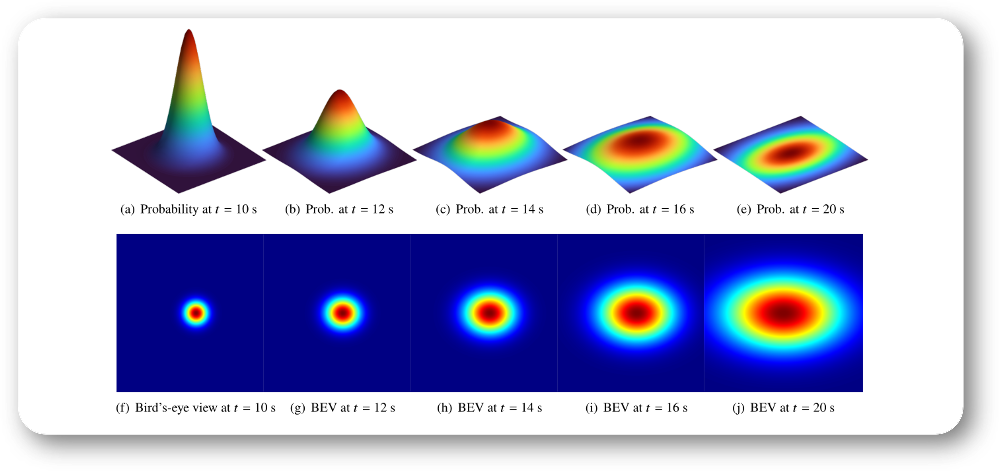
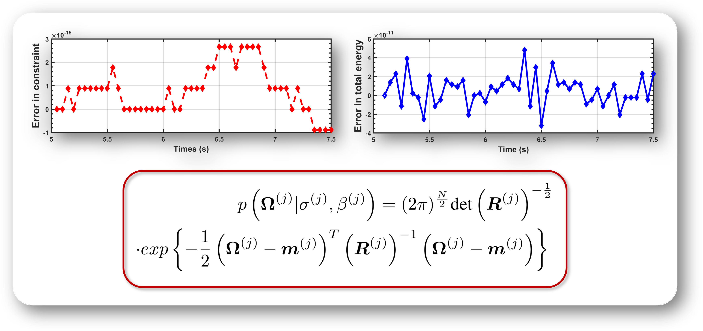
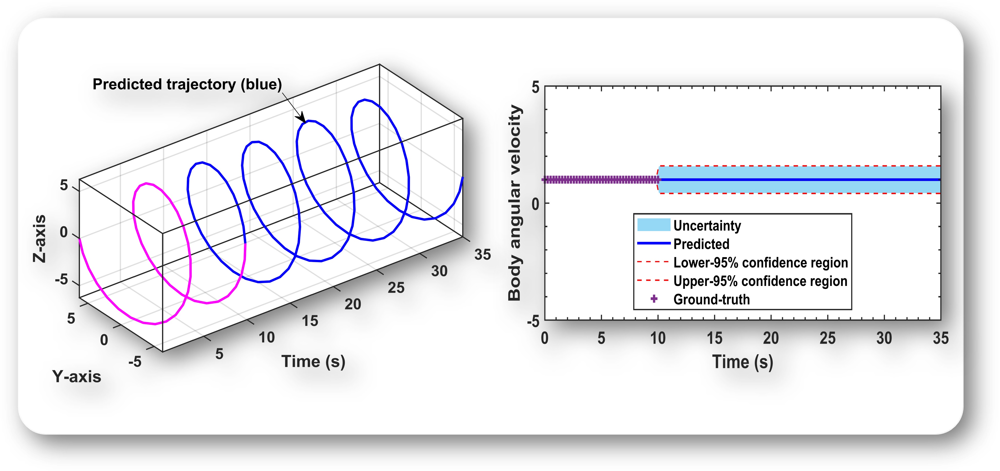
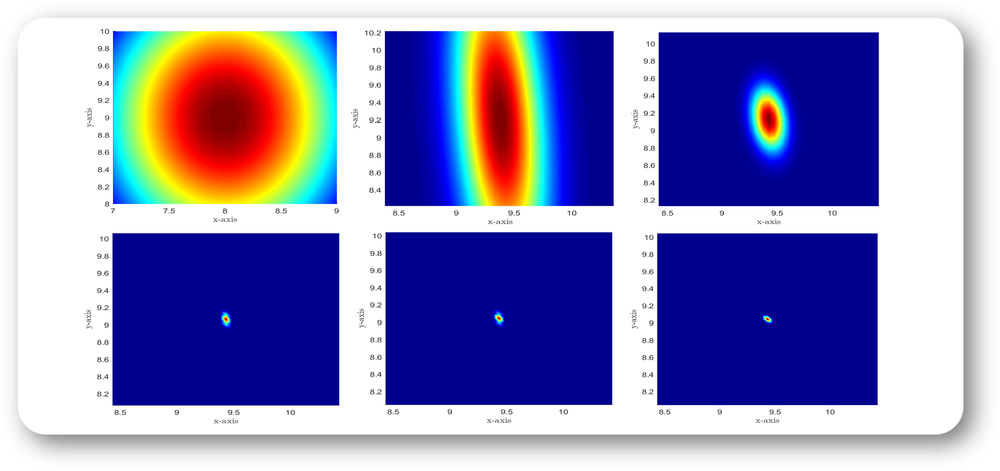

Publications
Preprints
Published Papers
|  | Physics-Informed Gaussian Process Learning on Lie Groups |
 |
Variational unscented Kalman filter on matrix Lie groups |
Structure-Preserving Unscented Kalman Filter for Planar Mobile Robots |
 |
Reduced dynamics and geometric optimal control of nonequilibrium thermodynamics: Gaussian case |
 |
Multisymplectic unscented Kalman filter for geometrically exact beams |
 |
Variational Principle for Stochastic Nonholonomic Systems Part I: Continuous-Time Formulation |
 |
Variational Principle for Stochastic Nonholonomic Systems Part II: Stochastic Nonholonomic Integrator |
|  | A structure-preserving learning scheme on SO(3) We propose a physics-guided Gaussian learning method for SO(3) attitude dynamics prediction. Numerical results are given to demonstrate the structure-preserving properties of the proposed method, such as energy conservation, constraint preservation, and geometry preservation. |
|  | A physics-informed Gaussian process regression algorithm for the dynamics of the planar pendulum We introduce a Gaussian process regression algorithm for the prediction of planar pendulum dynamics. Numerical results show that the proposed method preserves some key numerical quantities of the system, including the numerical energy and the physical length of the pendulum. |
|  | A statistical dynamical algorithm for Gaussian multi-agent systems under Hamel's formalism We study the geometric structure of n-DOF Gaussian distributions (normal distributions) using Lie group and homogeneous manifold theories. In particular, the metric matrix and the Lagrangian of the system is determined and the discrete dynamics is derived using a discrete variational principle. The resulting geometric integrator for n-DOF Gaussian distributions exhibits properties of energy conservation compared with Runge-Kutta method. |